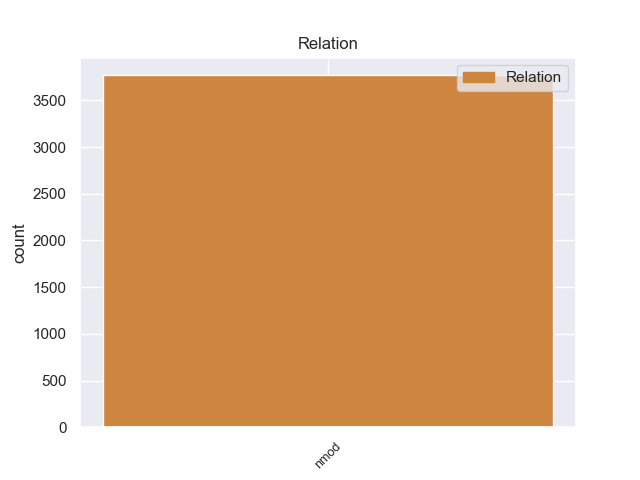
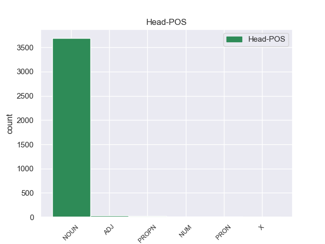
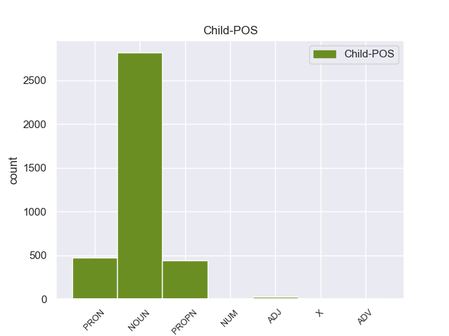

Distribution of features within this leaf



Agreement Rules sorted by frequency.
- When the dependent token is the nominal modifier(nmod) of the head token, and the dependent token is NOUN.
1 Αυτό _ _ _ _ 0 _ _ _
2 μπορεί _ _ _ _ 0 _ _ _
3 να _ _ _ _ 0 _ _ _
4 μην _ _ _ _ 0 _ _ _
5 οδηγήσει _ _ _ _ 0 _ _ _
6 σ _ _ _ _ 0 _ _ _
7 τη _ _ _ _ 0 _ _ _
8 λήξη _ _ _ _ 0 _ _ _
9 του _ _ _ _ 0 _ _ _
10 εν _ _ _ _ 0 _ _ _
11 λόγω _ _ _ _ 0 _ _ _
12 ζητήματος _ _ _ _ 0 _ _ _
13 αλλά _ _ _ _ 0 _ _ _
14 , _ _ _ _ 0 _ _ _
15 σ _ _ _ _ 0 _ _ _
16 τη _ _ _ _ 0 _ _ _
17 μορφή _ _ _ _ 0 _ _ _
18 υπό _ _ _ _ 0 _ _ _
19 την _ _ _ _ 0 _ _ _
20 οποία _ _ _ _ 0 _ _ _
21 την _ _ _ _ 0 _ _ _
22 λάβαμε _ _ _ _ 0 _ _ _
23 , _ _ _ _ 0 _ _ _
24 αυτή _ _ _ _ 0 _ _ _
25 η _ _ _ _ 0 _ _ _
26 αίτηση _ _ _ _ 0 _ _ _
27 άρσης _ _ _ _ 0 _ _ _
28 της _ _ _ _ 0 _ _ _
29 ασυλίας _ _ _ _ 0 _ _ _
30 ήταν _ _ _ _ 0 _ _ _
31 , _ _ _ _ 0 _ _ _
32 κατά _ _ _ _ 0 _ _ _
33 την _ _ _ _ 0 _ _ _
34 άποψη άποψη NOUN _ Case=Acc|Gender=Fem|Number=Sing 0 _ _ _
35 της _ _ _ _ 0 _ _ _
36 Επιτροπής επιτροπή NOUN _ Case=Gen|Gender=Fem|Number=Sing 34 nmod _ _
37 Νομικών _ _ _ _ 0 _ _ _
38 Θεμάτων _ _ _ _ 0 _ _ _
39 , _ _ _ _ 0 _ _ _
40 απαράδεκτη _ _ _ _ 0 _ _ _
41 , _ _ _ _ 0 _ _ _
42 άποψη _ _ _ _ 0 _ _ _
43 την _ _ _ _ 0 _ _ _
44 οποία _ _ _ _ 0 _ _ _
45 συνιστώ _ _ _ _ 0 _ _ _
46 σ _ _ _ _ 0 _ _ _
47 το _ _ _ _ 0 _ _ _
48 Σώμα _ _ _ _ 0 _ _ _
49 να _ _ _ _ 0 _ _ _
50 υιοθετήσει _ _ _ _ 0 _ _ _
51 . _ _ _ _ 0 _ _ _
1 Οι _ _ _ _ 0 _ _ _
2 Αρχές _ _ _ _ 0 _ _ _
3 της _ _ _ _ 0 _ _ _
4 Μισουράτας _ _ _ _ 0 _ _ _
5 ( _ _ _ _ 0 _ _ _
6 ή _ _ _ _ 0 _ _ _
7 Μισράτας _ _ _ _ 0 _ _ _
8 ) _ _ _ _ 0 _ _ _
9 , _ _ _ _ 0 _ _ _
10 της _ _ _ _ 0 _ _ _
11 τρίτης _ _ _ _ 0 _ _ _
12 μεγαλύτερης _ _ _ _ 0 _ _ _
13 πόλης πόλη NOUN _ Case=Gen|Gender=Fem|Number=Sing 0 _ _ _
14 σ _ _ _ _ 0 _ _ _
15 τη _ _ _ _ 0 _ _ _
16 Λιβύη Λιβύη PROPN _ Case=Acc|Gender=Fem|Number=Sing 13 nmod _ _
17 , _ _ _ _ 0 _ _ _
18 εξέφρασαν _ _ _ _ 0 _ _ _
19 την _ _ _ _ 0 _ _ _
20 επιθυμία _ _ _ _ 0 _ _ _
21 τους _ _ _ _ 0 _ _ _
22 για _ _ _ _ 0 _ _ _
23 καθεστώς _ _ _ _ 0 _ _ _
24 ημιαυτονομίας _ _ _ _ 0 _ _ _
25 . _ _ _ _ 0 _ _ _
1 Τόσο _ _ _ _ 0 _ _ _
2 το _ _ _ _ 0 _ _ _
3 ζήτημα _ _ _ _ 0 _ _ _
4 της _ _ _ _ 0 _ _ _
5 ασυλίας _ _ _ _ 0 _ _ _
6 όσο _ _ _ _ 0 _ _ _
7 και _ _ _ _ 0 _ _ _
8 η _ _ _ _ 0 _ _ _
9 αίτηση _ _ _ _ 0 _ _ _
10 για _ _ _ _ 0 _ _ _
11 άρση άρση NOUN _ Case=Acc|Gender=Fem|Number=Sing 0 _ _ _
12 της μου PRON _ Case=Gen|Gender=Fem|Number=Sing|Person=3|Poss=Yes|PronType=Prs 11 nmod _ _
13 έχουν _ _ _ _ 0 _ _ _
14 σχέση _ _ _ _ 0 _ _ _
15 μόνο _ _ _ _ 0 _ _ _
16 με _ _ _ _ 0 _ _ _
17 το _ _ _ _ 0 _ _ _
18 εάν _ _ _ _ 0 _ _ _
19 το _ _ _ _ 0 _ _ _
20 Δικαστήριο _ _ _ _ 0 _ _ _
21 μπορεί _ _ _ _ 0 _ _ _
22 να _ _ _ _ 0 _ _ _
23 εκδώσει _ _ _ _ 0 _ _ _
24 δεσμευτικά _ _ _ _ 0 _ _ _
25 βουλεύματα _ _ _ _ 0 _ _ _
26 για _ _ _ _ 0 _ _ _
27 τον _ _ _ _ 0 _ _ _
28 περιορισμό _ _ _ _ 0 _ _ _
29 της _ _ _ _ 0 _ _ _
30 ελεύθερης _ _ _ _ 0 _ _ _
31 μετακίνησης _ _ _ _ 0 _ _ _
32 των _ _ _ _ 0 _ _ _
33 βουλευτών _ _ _ _ 0 _ _ _
34 του _ _ _ _ 0 _ _ _
35 Ευρωπαϊκού _ _ _ _ 0 _ _ _
36 Κοινοβουλίου _ _ _ _ 0 _ _ _
37 ή _ _ _ _ 0 _ _ _
38 την _ _ _ _ 0 _ _ _
39 ελευθερία _ _ _ _ 0 _ _ _
40 τους _ _ _ _ 0 _ _ _
41 να _ _ _ _ 0 _ _ _
42 έρχονται _ _ _ _ 0 _ _ _
43 σε _ _ _ _ 0 _ _ _
44 επικοινωνία _ _ _ _ 0 _ _ _
45 με _ _ _ _ 0 _ _ _
46 άλλα _ _ _ _ 0 _ _ _
47 πρόσωπα _ _ _ _ 0 _ _ _
48 . _ _ _ _ 0 _ _ _
1 Θα _ _ _ _ 0 _ _ _
2 ήθελα _ _ _ _ 0 _ _ _
3 να _ _ _ _ 0 _ _ _
4 επιστήσω _ _ _ _ 0 _ _ _
5 την _ _ _ _ 0 _ _ _
6 προσοχή _ _ _ _ 0 _ _ _
7 όλων _ _ _ _ 0 _ _ _
8 των _ _ _ _ 0 _ _ _
9 συναδέλφων _ _ _ _ 0 _ _ _
10 σ _ _ _ _ 0 _ _ _
11 το _ _ _ _ 0 _ _ _
12 γεγονός _ _ _ _ 0 _ _ _
13 ότι _ _ _ _ 0 _ _ _
14 , _ _ _ _ 0 _ _ _
15 εάν _ _ _ _ 0 _ _ _
16 υπάρχουν _ _ _ _ 0 _ _ _
17 κάποιες _ _ _ _ 0 _ _ _
18 ελευθερίες _ _ _ _ 0 _ _ _
19 οι _ _ _ _ 0 _ _ _
20 οποίες _ _ _ _ 0 _ _ _
21 είναι _ _ _ _ 0 _ _ _
22 ζωτικής _ _ _ _ 0 _ _ _
23 σημασίας _ _ _ _ 0 _ _ _
24 για _ _ _ _ 0 _ _ _
25 την _ _ _ _ 0 _ _ _
26 άσκηση _ _ _ _ 0 _ _ _
27 του _ _ _ _ 0 _ _ _
28 λειτουργήματος _ _ _ _ 0 _ _ _
29 της _ _ _ _ 0 _ _ _
30 δημόσιας _ _ _ _ 0 _ _ _
31 εκπροσώπησης _ _ _ _ 0 _ _ _
32 , _ _ _ _ 0 _ _ _
33 ιδίως _ _ _ _ 0 _ _ _
34 για _ _ _ _ 0 _ _ _
35 ένα _ _ _ _ 0 _ _ _
36 Κοινοβούλιο κοινοβούλιο NOUN _ Case=Acc|Gender=Neut|Number=Sing 0 _ _ _
37 σαν _ _ _ _ 0 _ _ _
38 το _ _ _ _ 0 _ _ _
39 δικό δικός ADJ _ Case=Acc|Gender=Neut|Number=Sing 36 nmod _ _
40 μας _ _ _ _ 0 _ _ _
41 , _ _ _ _ 0 _ _ _
42 η _ _ _ _ 0 _ _ _
43 ελευθερία _ _ _ _ 0 _ _ _
44 της _ _ _ _ 0 _ _ _
45 επικοινωνίας _ _ _ _ 0 _ _ _
46 με _ _ _ _ 0 _ _ _
47 άλλους _ _ _ _ 0 _ _ _
48 πολίτες _ _ _ _ 0 _ _ _
49 και _ _ _ _ 0 _ _ _
50 με _ _ _ _ 0 _ _ _
51 τους _ _ _ _ 0 _ _ _
52 πολίτες _ _ _ _ 0 _ _ _
53 τρίτων _ _ _ _ 0 _ _ _
54 χωρών _ _ _ _ 0 _ _ _
55 , _ _ _ _ 0 _ _ _
56 καθώς _ _ _ _ 0 _ _ _
57 και _ _ _ _ 0 _ _ _
58 η _ _ _ _ 0 _ _ _
59 ελευθερία _ _ _ _ 0 _ _ _
60 μετακίνησης _ _ _ _ 0 _ _ _
61 , _ _ _ _ 0 _ _ _
62 είναι _ _ _ _ 0 _ _ _
63 κρίσιμες _ _ _ _ 0 _ _ _
64 για _ _ _ _ 0 _ _ _
65 τη _ _ _ _ 0 _ _ _
66 διεκπεραίωση _ _ _ _ 0 _ _ _
67 του _ _ _ _ 0 _ _ _
68 έργου _ _ _ _ 0 _ _ _
69 μας _ _ _ _ 0 _ _ _
70 . _ _ _ _ 0 _ _ _
1 Κυρία κυρίος NOUN _ Case=Voc|Gender=Masc|Number=Sing 0 _ _ _
2 Πρόεδρε πρόεδρος ADV _ Case=Voc|Gender=Masc|Number=Sing 1 nmod _ _
3 , _ _ _ _ 0 _ _ _
4 αγαπητοί _ _ _ _ 0 _ _ _
5 συνάδελφοι _ _ _ _ 0 _ _ _
6 , _ _ _ _ 0 _ _ _
7 η _ _ _ _ 0 _ _ _
8 μοναδικότητα _ _ _ _ 0 _ _ _
9 του _ _ _ _ 0 _ _ _
10 προγράμματος _ _ _ _ 0 _ _ _
11 ΝΕΟΛΑΙΑ _ _ _ _ 0 _ _ _
12 έγκειται _ _ _ _ 0 _ _ _
13 σ _ _ _ _ 0 _ _ _
14 το _ _ _ _ 0 _ _ _
15 ότι _ _ _ _ 0 _ _ _
16 είναι _ _ _ _ 0 _ _ _
17 πραγματικά _ _ _ _ 0 _ _ _
18 ανοιχτό _ _ _ _ 0 _ _ _
19 για _ _ _ _ 0 _ _ _
20 όλους _ _ _ _ 0 _ _ _
21 τους _ _ _ _ 0 _ _ _
22 νέους _ _ _ _ 0 _ _ _
23 ανθρώπους _ _ _ _ 0 _ _ _
24 , _ _ _ _ 0 _ _ _
25 καθώς _ _ _ _ 0 _ _ _
26 τους _ _ _ _ 0 _ _ _
27 δίνει _ _ _ _ 0 _ _ _
28 τη _ _ _ _ 0 _ _ _
29 δυνατότητα _ _ _ _ 0 _ _ _
30 να _ _ _ _ 0 _ _ _
31 έχουν _ _ _ _ 0 _ _ _
32 άμεσες _ _ _ _ 0 _ _ _
33 εμπειρίες _ _ _ _ 0 _ _ _
34 σχετικά _ _ _ _ 0 _ _ _
35 με _ _ _ _ 0 _ _ _
36 την _ _ _ _ 0 _ _ _
37 Ευρώπη _ _ _ _ 0 _ _ _
38 σε _ _ _ _ 0 _ _ _
39 μία _ _ _ _ 0 _ _ _
40 ηλικία _ _ _ _ 0 _ _ _
41 που _ _ _ _ 0 _ _ _
42 διαμορφώνεται _ _ _ _ 0 _ _ _
43 η _ _ _ _ 0 _ _ _
44 προσωπικότητα _ _ _ _ 0 _ _ _
45 , _ _ _ _ 0 _ _ _
46 και _ _ _ _ 0 _ _ _
47 φέρνει _ _ _ _ 0 _ _ _
48 σ _ _ _ _ 0 _ _ _
49 τη _ _ _ _ 0 _ _ _
50 ζωή _ _ _ _ 0 _ _ _
51 τους _ _ _ _ 0 _ _ _
52 την _ _ _ _ 0 _ _ _
53 ευρωπαϊκή _ _ _ _ 0 _ _ _
54 διάσταση _ _ _ _ 0 _ _ _
55 . _ _ _ _ 0 _ _ _
1 Αυτό _ _ _ _ 0 _ _ _
2 σημαίνει _ _ _ _ 0 _ _ _
3 ότι _ _ _ _ 0 _ _ _
4 πρέπει _ _ _ _ 0 _ _ _
5 να _ _ _ _ 0 _ _ _
6 εξετάσουμε _ _ _ _ 0 _ _ _
7 την _ _ _ _ 0 _ _ _
8 εξέλιξη _ _ _ _ 0 _ _ _
9 της _ _ _ _ 0 _ _ _
10 ελευθέρωσης _ _ _ _ 0 _ _ _
11 των _ _ _ _ 0 _ _ _
12 οδικών _ _ _ _ 0 _ _ _
13 εμπορευματικών _ _ _ _ 0 _ _ _
14 μεταφορών _ _ _ _ 0 _ _ _
15 πρώτον _ _ _ _ 0 _ _ _
16 με _ _ _ _ 0 _ _ _
17 όρους _ _ _ _ 0 _ _ _
18 οικονομικούς _ _ _ _ 0 _ _ _
19 , _ _ _ _ 0 _ _ _
20 δεύτερον _ _ _ _ 0 _ _ _
21 σε _ _ _ _ 0 _ _ _
22 σχέση _ _ _ _ 0 _ _ _
23 με _ _ _ _ 0 _ _ _
24 τους _ _ _ _ 0 _ _ _
25 εργοδότες _ _ _ _ 0 _ _ _
26 , _ _ _ _ 0 _ _ _
27 αλλά _ _ _ _ 0 _ _ _
28 επίσης _ _ _ _ 0 _ _ _
29 και _ _ _ _ 0 _ _ _
30 σε _ _ _ _ 0 _ _ _
31 σχέση _ _ _ _ 0 _ _ _
32 με _ _ _ _ 0 _ _ _
33 τους _ _ _ _ 0 _ _ _
34 εργαζόμενους _ _ _ _ 0 _ _ _
35 , _ _ _ _ 0 _ _ _
36 υπό _ _ _ _ 0 _ _ _
37 το _ _ _ _ 0 _ _ _
38 ίδιο _ _ _ _ 0 _ _ _
39 πρίσμα _ _ _ _ 0 _ _ _
40 , _ _ _ _ 0 _ _ _
41 και _ _ _ _ 0 _ _ _
42 πιστεύω _ _ _ _ 0 _ _ _
43 ότι _ _ _ _ 0 _ _ _
44 μπορούμε _ _ _ _ 0 _ _ _
45 να _ _ _ _ 0 _ _ _
46 εκπροσωπήσουμε _ _ _ _ 0 _ _ _
47 εξίσου _ _ _ _ 0 _ _ _
48 τα _ _ _ _ 0 _ _ _
49 συμφέροντα συμφέροντο NOUN _ Case=Acc|Gender=Neut|Number=Plur 0 _ _ _
50 και _ _ _ _ 0 _ _ _
51 των _ _ _ _ 0 _ _ _
52 δύο δύο NUM _ Case=Gen|Gender=Neut|Number=Plur|NumType=Card 49 nmod _ _
53 . _ _ _ _ 0 _ _ _
1 Η _ _ _ _ 0 _ _ _
2 σημερινή _ _ _ _ 0 _ _ _
3 μέρα _ _ _ _ 0 _ _ _
4 σ _ _ _ _ 0 _ _ _
5 το _ _ _ _ 0 _ _ _
6 Βέλγιο _ _ _ _ 0 _ _ _
7 είναι _ _ _ _ 0 _ _ _
8 ημέρα _ _ _ _ 0 _ _ _
9 πένθους _ _ _ _ 0 _ _ _
10 για _ _ _ _ 0 _ _ _
11 τα _ _ _ _ 0 _ _ _
12 θύματα _ _ _ _ 0 _ _ _
13 ενός _ _ _ _ 0 _ _ _
14 αυτοκινητιστικού _ _ _ _ 0 _ _ _
15 δυστυχήματος κίνηυχήμα NOUN _ Case=Gen|Gender=Neut|Number=Sing 0 _ _ _
16 σε _ _ _ _ 0 _ _ _
17 τούνελ τούνελ X _ Case=Acc|Gender=Neut|Number=Sing 15 nmod _ _
18 της _ _ _ _ 0 _ _ _
19 Ελβετίας _ _ _ _ 0 _ _ _
20 , _ _ _ _ 0 _ _ _
21 του _ _ _ _ 0 _ _ _
22 οποίου _ _ _ _ 0 _ _ _
23 θύματα _ _ _ _ 0 _ _ _
24 ήταν _ _ _ _ 0 _ _ _
25 μαθητές _ _ _ _ 0 _ _ _
26 δύο _ _ _ _ 0 _ _ _
27 βελγικών _ _ _ _ 0 _ _ _
28 σχολείων _ _ _ _ 0 _ _ _
29 . _ _ _ _ 0 _ _ _
Disagree Examples:
1 Ο _ _ _ _ 0 _ _ _
2 ποταμός _ _ _ _ 0 _ _ _
3 Αχέροντας _ _ _ _ 0 _ _ _
4 αποτελούσε _ _ _ _ 0 _ _ _
5 κατά _ _ _ _ 0 _ _ _
6 τη _ _ _ _ 0 _ _ _
7 μυθολογία _ _ _ _ 0 _ _ _
8 το _ _ _ _ 0 _ _ _
9 δρόμο _ _ _ _ 0 _ _ _
10 μέσω _ _ _ _ 0 _ _ _
11 του _ _ _ _ 0 _ _ _
12 οποίου _ _ _ _ 0 _ _ _
13 ο _ _ _ _ 0 _ _ _
14 Άδης _ _ _ _ 0 _ _ _
15 μετέφερε _ _ _ _ 0 _ _ _
16 τις _ _ _ _ 0 _ _ _
17 ψυχές _ _ _ _ 0 _ _ _
18 σ _ _ _ _ 0 _ _ _
19 το _ _ _ _ 0 _ _ _
20 βασίλειό βασίλειο NOUN NOUN Case=Acc|Gender=Neut|Number=Sing 0 _ _ _
21 του μου PRON PRON Case=Gen|Gender=Masc|Number=Sing|Person=3|Poss=Yes|PronType=Prs 20 nmod _ SpaceAfter=No
22 , _ _ _ _ 0 _ _ _
23 σ _ _ _ _ 0 _ _ _
24 τη _ _ _ _ 0 _ _ _
25 λίμνη _ _ _ _ 0 _ _ _
26 Αχερουσία _ _ _ _ 0 _ _ _
27 . _ _ _ _ 0 _ _ _
1 Ο _ _ _ _ 0 _ _ _
2 ποταμός _ _ _ _ 0 _ _ _
3 Αχέροντας _ _ _ _ 0 _ _ _
4 αποτελούσε _ _ _ _ 0 _ _ _
5 κατά _ _ _ _ 0 _ _ _
6 τη _ _ _ _ 0 _ _ _
7 μυθολογία _ _ _ _ 0 _ _ _
8 το _ _ _ _ 0 _ _ _
9 δρόμο _ _ _ _ 0 _ _ _
10 μέσω _ _ _ _ 0 _ _ _
11 του _ _ _ _ 0 _ _ _
12 οποίου _ _ _ _ 0 _ _ _
13 ο _ _ _ _ 0 _ _ _
14 Άδης _ _ _ _ 0 _ _ _
15 μετέφερε _ _ _ _ 0 _ _ _
16 τις _ _ _ _ 0 _ _ _
17 ψυχές _ _ _ _ 0 _ _ _
18 σ _ _ _ _ 0 _ _ _
19 το _ _ _ _ 0 _ _ _
20 βασίλειό βασίλειο NOUN NOUN Case=Acc|Gender=Neut|Number=Sing 0 _ _ _
21 του _ _ _ _ 0 _ _ _
22 , _ _ _ _ 0 _ _ _
23 σ _ _ _ _ 0 _ _ _
24 τη _ _ _ _ 0 _ _ _
25 λίμνη λίμνη NOUN NOUN Case=Acc|Gender=Fem|Number=Sing 20 nmod _ _
26 Αχερουσία _ _ _ _ 0 _ _ _
27 . _ _ _ _ 0 _ _ _
1 Πηγάζει _ _ _ _ 0 _ _ _
2 από _ _ _ _ 0 _ _ _
3 τα _ _ _ _ 0 _ _ _
4 ορεινά ορεινός ADJ ADJ Case=Acc|Gender=Neut|Number=Plur 0 _ _ _
5 του _ _ _ _ 0 _ _ _
6 Νομού νομός NOUN NOUN Case=Gen|Gender=Masc|Number=Sing 4 nmod _ _
7 Ιωαννίνων _ _ _ _ 0 _ _ _
8 και _ _ _ _ 0 _ _ _
9 έπειτα _ _ _ _ 0 _ _ _
10 από _ _ _ _ 0 _ _ _
11 διαδρομή _ _ _ _ 0 _ _ _
12 64 _ _ _ _ 0 _ _ _
13 χιλιομέτρων _ _ _ _ 0 _ _ _
14 εκβάλλει _ _ _ _ 0 _ _ _
15 σ _ _ _ _ 0 _ _ _
16 το _ _ _ _ 0 _ _ _
17 Ιόνιο _ _ _ _ 0 _ _ _
18 Πέλαγος _ _ _ _ 0 _ _ _
19 . _ _ _ _ 0 _ _ _
1 Πηγάζει _ _ _ _ 0 _ _ _
2 από _ _ _ _ 0 _ _ _
3 τα _ _ _ _ 0 _ _ _
4 ορεινά _ _ _ _ 0 _ _ _
5 του _ _ _ _ 0 _ _ _
6 Νομού νομός NOUN NOUN Case=Gen|Gender=Masc|Number=Sing 0 _ _ _
7 Ιωαννίνων Ιωάννινα PROPN PROPN Case=Gen|Gender=Neut|Number=Plur 6 nmod _ _
8 και _ _ _ _ 0 _ _ _
9 έπειτα _ _ _ _ 0 _ _ _
10 από _ _ _ _ 0 _ _ _
11 διαδρομή _ _ _ _ 0 _ _ _
12 64 _ _ _ _ 0 _ _ _
13 χιλιομέτρων _ _ _ _ 0 _ _ _
14 εκβάλλει _ _ _ _ 0 _ _ _
15 σ _ _ _ _ 0 _ _ _
16 το _ _ _ _ 0 _ _ _
17 Ιόνιο _ _ _ _ 0 _ _ _
18 Πέλαγος _ _ _ _ 0 _ _ _
19 . _ _ _ _ 0 _ _ _
1 Πηγάζει _ _ _ _ 0 _ _ _
2 από _ _ _ _ 0 _ _ _
3 τα _ _ _ _ 0 _ _ _
4 ορεινά _ _ _ _ 0 _ _ _
5 του _ _ _ _ 0 _ _ _
6 Νομού _ _ _ _ 0 _ _ _
7 Ιωαννίνων _ _ _ _ 0 _ _ _
8 και _ _ _ _ 0 _ _ _
9 έπειτα _ _ _ _ 0 _ _ _
10 από _ _ _ _ 0 _ _ _
11 διαδρομή διαδρομή NOUN NOUN Case=Acc|Gender=Fem|Number=Sing 0 _ _ _
12 64 _ _ _ _ 0 _ _ _
13 χιλιομέτρων χιλιόμετρο NOUN NOUN Case=Gen|Gender=Neut|Number=Plur 11 nmod _ _
14 εκβάλλει _ _ _ _ 0 _ _ _
15 σ _ _ _ _ 0 _ _ _
16 το _ _ _ _ 0 _ _ _
17 Ιόνιο _ _ _ _ 0 _ _ _
18 Πέλαγος _ _ _ _ 0 _ _ _
19 . _ _ _ _ 0 _ _ _